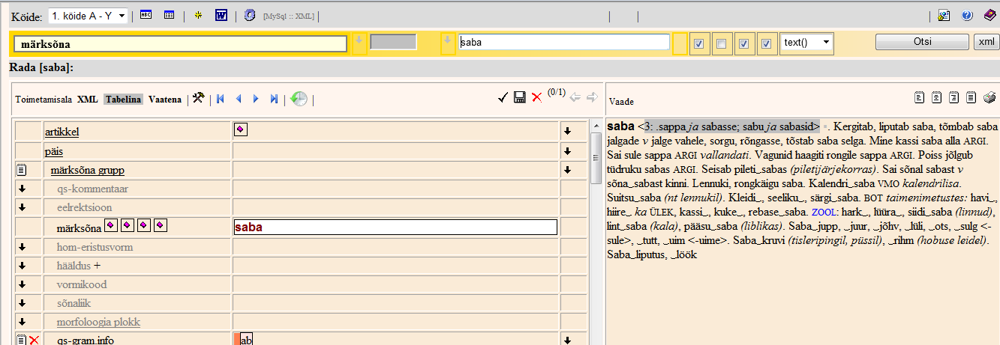
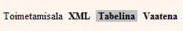
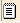
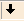
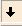
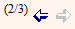
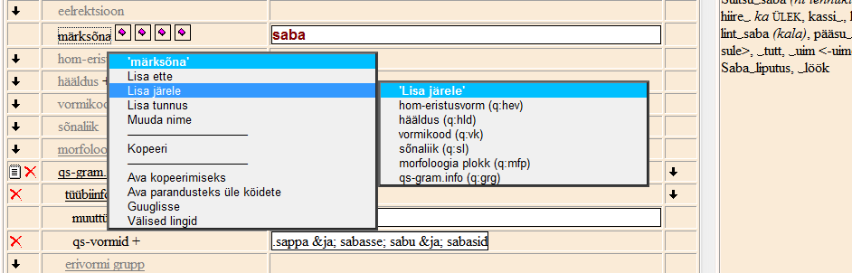
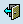
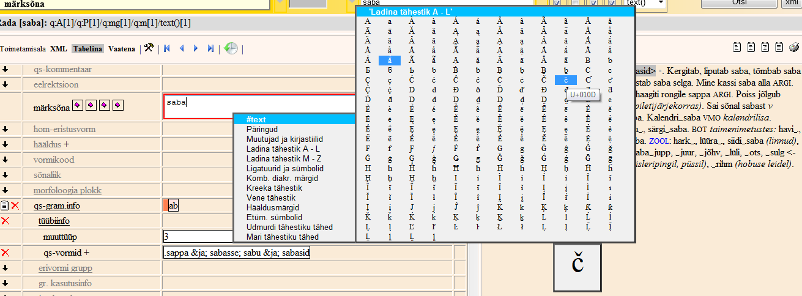

Sõnaartikli muutmine
Artikli avamisel avaneb vasakul poolel Toimetamisala, kus on artikli tekst XML üksuste kaupa, paremal artikli tekst küljendatud kujul (Vaade). Toimetamisala ja küljenduse vaated on omavahel seotud: klõpsates ühel neist mingile elemendile, avatakse või näidatakse taustaga võõbatult sama element ka teises.

Toimetamisala saab vaadata erinevatel kujudel:
- Tabelina (vaikimisi, näitab väljade nimesid ja sisusid tabeli vormis),
- XML (artikkel XML märgenduses)
- Vaatena (küljendatud vaatena, kus saab tekstiparandusi teha, struktuurimuudatusi mitte).
Neid kujusid saab esile kuvada
Toimetamisala ülaservas olevate samanimeliste nuppude abil:

Gruppide ja elementide lisamiseks on Toimetamisalal tabeli vaates elementide nimest vasakul valge taustaga ikoonid .
Elemendi või grupi loomine - elemendist vasakul asuva musta allapoole suunatud noolekujulise ikooni.
Lisada kõik antud grupis veel avamata elemendid - Tabelivaate paremas ääres olevad noolekujulised ikoonid .
Parandamisel on võimalik kasutada tühista/taasta (Undo/Redo) käske, vastavad noolekujulised nupud asuvad Toimetamisala üleval paremas ääres. Numbrid noolenuppudest vasakul tähistavad paranduste jooksvat puhvrit ja puhvrite koguarvu .
Kontekstmenüüd
Erinevad kontekstmenüüd avanevad, kui paremklõpsad XML elemendile või tekstilahtrile.
1. Igale artikli üksusele ehk
XML elemendile paremklõpsu tehes on võimalik esitada tema kontekstmenüü, kus saab valida ainult neid tegevusi, mis antud artikli osas on skeemi järgi lubatud.

Kontekstmenüü kaudu on võimalik
- lisada elemente antud elemendi ette või järele;
- lisada elemendile tunnuseid ehk atribuute, kui elemendil on need skeemi järgi olemas;
- muuta elemendi silti (ja nime), kui skeemi järgi on see lubatud;
- kopeerida, lõigata või kleepida elementi, tervet gruppi või mitut elementi või gruppi korraga (hoia all ctrl+alt+shift all paremklõpsu ajal ja ilmuvad valikud Kopeeri lisaks ja Lõika lisaks);
- kustutada element, kui see on lubatud.
Elemendi või ploki
sisu saab kopeerida, kui Toimetamisalal teha paremklõps elemendi/ploki sildil ning kontekstmenüüst valida
Ava kopeerimiseks. Tekstid kuvatakse Vaatealal, kust neid saab kopeerida. Tagasi tavalisse Vaatesse saab ilmunud nupu  abil.
Ava parandusteks üle köidete - avaneb Hulgiparanduste aken, kus on juba otsinguparameetrid ära täidetud. Edasi toimimiseks vt
Hulgiparandused.
Paremklõps sildil ja valik
Guuglisse pärib selle elemendi teksti google.com otsimootoris.
Välised lingid - kuvab lehe, kus loetelu välistest allikatest, kust selle elemendi sisu otsiti: Google ja vaikimisi mitu Eesti Keele Instituudi veebisõnastikku; on võimalus lisada teisi EKI veebisõnastikke (sisestades sõnastiku lingi).
2. Eraldi kontekstmenüü on olemas
tekstilahtrite sees (s.t paremklõpsata siis, kui kursor plingib tekstilahtri sees): ka seal on võimalikud ainult kindlad, kontekstile vastavad tegevused. Vaid Mx tüüpi elementide puhul saab lisada nii teksti kui teisi elemente. Tavalise tekstivälja korral kuvatakse ainult
sümbolite ja
kirjastiilide menüüpunktid (näiteks kirjastiili muutuse algus ja lõpp, ülaindeksi algus ja lõpp, allajoonitud algus ja lõpp jne - tähendusi vaata hiirega stiilile peale jäädes ilmuvalt ribalt).
Tekstiväljas on
topeltklõpsuga võimalik märgistada mingi osa ja paremklõps sel osal avab kontekstmenüü, mille alläärde on lisandunud valik
kirjastiili määramiseks.
Ladina tähestiku kontekstmenüüsse on lisatud kõik laiendatud ladina tähestiku tähed,
kombineerivate diakriitiliste märkide abil on võimalik märkida rõhkusid, võimalik on lisada mitmesuguseid matemaatilisi jm sümboleid.

Tekstilahtri sisu muutmisel kontrollitakse sisu vastavust andmetüübile ja skeemi seatud piirangutele.
Soovi korral on võimalik kasutada tööjaama MS Word
õigekirjakontrolli .